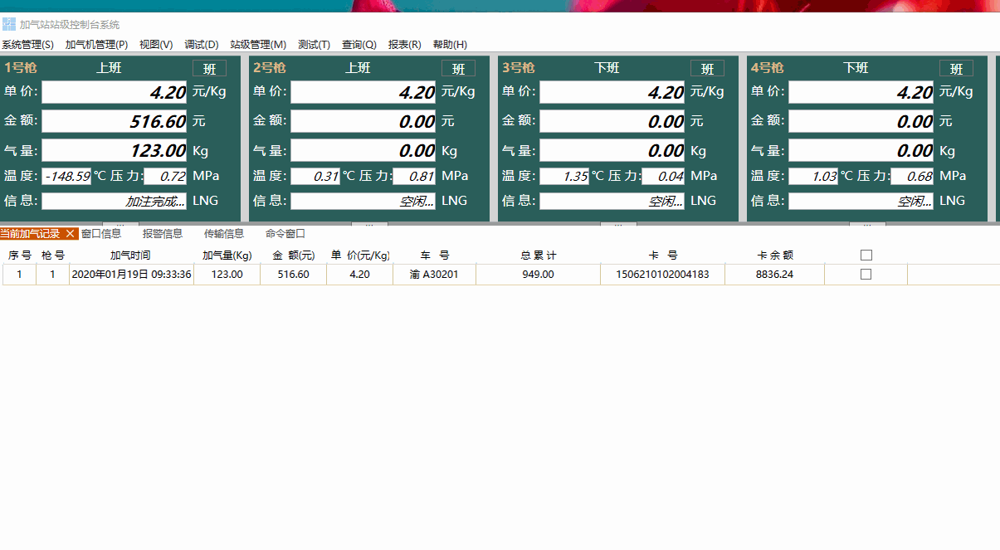

项目经验
加气机自动化控制系统（项目经理）
加气机智能化控制系统



项目背景：作为项目经理带领8人技术团队研发加气机自动化控制系统，实现设备智能化控制、安全监测和数据管理，满足加气站自动化运营需求。
项目管理职责：
1. 项目规划与团队管理：制定项目计划，组建技术团队，协调开发、测试和业务部门，确保项目按时交付；
2. 需求分析与系统设计：深入理解加气机工作原理，设计系统架构，包括控制逻辑、安全监控、数据采集等模块；
3. 技术方案制定：选择C#/.NET和WPF作为主要开发技术，集成SCADA监控功能，实现设备状态实时监控；
4. 质量管控：建立测试流程，确保系统稳定性，组织安全评估和计量精度测试；
5. 证书获取：带领团队完成国家安全技术认证和计量器具型式批准，确保产品符合国家标准。
技术实现：
1. 上位机开发：使用WPF开发用户界面，实现设备控制、参数设置、状态监控等功能；
2. 通信协议：集成Modbus、OPC UA等协议，实现与PLC和传感器的通信；
3. 安全系统：开发多级安全监控机制，包括压力监测、泄漏检测、紧急停止等功能；
4. 数据管理：设计数据库结构，实现加气记录、设备维护、统计分析等数据管理。